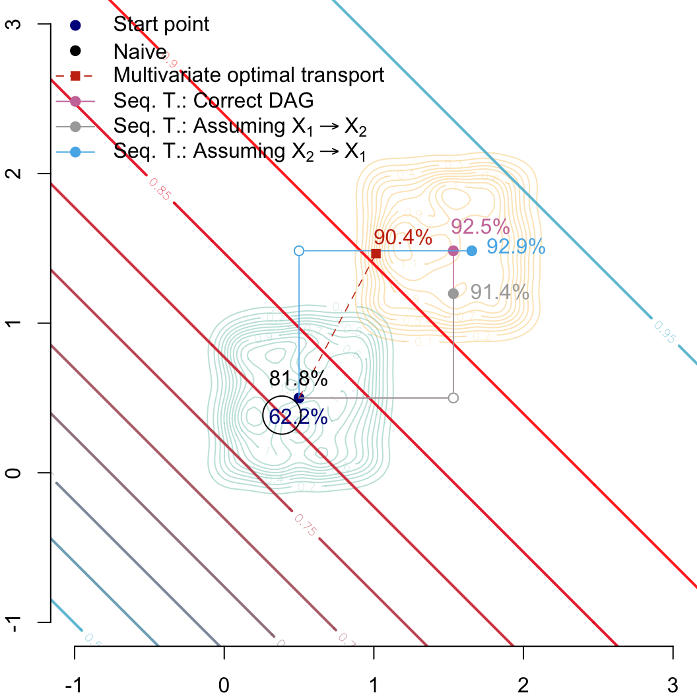

We load our small package to have access to the sequential tranposort function, as well as the function used to generate tikz pictures for causal graphs.
library(devtools)
Loading required package: usethis
load_all("../seqtransfairness/")
ℹ Loading seqtransfairness
Let \(S\in\{0,1\}\) be the sensitive attribute.
We generate two variables:
\((X_1|S=0)\sim\mathcal{U}(0,1)\) and \((X_1|S=1)\sim\mathcal{U}(1,2)\)
\((X_2|S=0)\sim\mathcal{U}(0,1)\) and \((X_2|S=1)\sim\mathcal{U}(1,2)\).
These variables are independent from one another.
set.seed(123) # set the seed for reproductible resultsn <-100# group s = 0X1_0 <-runif(n, 0, 1)X2_0 <-runif(n, 0, 1)# group s = 1X1_1 <-runif(n, 1, 2)X2_1 <-runif(n, 1, 2)
We simulate a binary response variable with a logistic model depending on covariates \(S(\boldsymbol{X})\).
Let us build an array with the values of the counterfactuals (for both groups here, even if we will only use the counterfactuals for group \(S=0\) only).
Rows: 201 Columns: 2
── Column specification ────────────────────────────────────────────────────────
Delimiter: ","
dbl (2): X1, X2
ℹ Use `spec()` to retrieve the full column specification for this data.
ℹ Specify the column types or set `show_col_types = FALSE` to quiet this message.
We make “Predictions” by the hypothetical model for the new point, given the characteristics \(x_1\) and \(x_2\) contained in coords_indep, setting \(s=0\).
colour_start <-"darkblue"colour_correct <-"#CC79A7"colour_inc_x1_then_x2 <-"darkgray"colour_inc_x2_then_x1 <-"#56B4E9"colour_ot <-"#C93312"colour_naive <-"#000000"# Colour scale from colour of class 0 to class 1colfunc <-colorRampPalette(c(colours["0"], colours["1"]))scl <- scales::alpha(colfunc(9),.9)CeX <-1par(mar =c(2, 2, 0, 0))# Group 0## Estimated density: level curves for (x1, x2) -> m(0, x1, x2)contour( f0_2d$eval.point[[1]], f0_2d$eval.point[[2]], f0_2d$estimate,col = scales::alpha(colours["A"], .3),axes =FALSE, xlab ="", ylab ="",xlim =c(-1, 3), ylim =c(-1, 3))# Group 1## Estimated density: level curves for (x1, x2) -> m(1, x1, x2)contour( f1_2d$eval.point[[1]], f1_2d$eval.point[[2]], f1_2d$estimate,col = scales::alpha(colours["B"], .3), add =TRUE)# Contour of estimates by the model for s=1contour( vx0, vx0, dlogistique1,levels = (1:9) /10,col = scl, lwd=2,add =TRUE)axis(1)axis(2)#### Individual (s=0, x1=-2, x2=-1)###points( coords_indep$start[1], coords_indep$start[2], pch =19, cex = CeX, col = colour_start)## Predicted value for the individual, based on factualstext( coords_indep$start[1], coords_indep$start[2], paste(round(predicted_val["start"] *100, 1), "%", sep =""),pos =1, cex = CeX, col = colour_start)#### Transported individual using correct DAG###points( coords_indep$correct[1], coords_indep$correct[2],pch =19, cex = CeX, col = colour_correct)text( coords_indep$correct[1], coords_indep$correct[2],paste(round(predicted_val[["correct"]]*100,1),"%",sep=""),pos =4, cex = CeX, col = colour_correct)segments(x0 = coords_indep$start[1], y0 = coords_indep$start[2],x1 = coords_indep$correct_interm_x2[1], y1 = coords_indep$correct_interm_x2[2],lwd = .8, col = colour_correct)segments(x0 = coords_indep$correct_interm_x2[1], y0 = coords_indep$correct_interm_x2[2],x1 = coords_indep$correct[1], y1 = coords_indep$correct[2], ,lwd = .8, col = colour_correct)## Intermediate pointpoints( coords_indep$correct_interm_x2[1], coords_indep$correct_interm_x2[2],pch =19, col ="white", cex = CeX)points( coords_indep$correct_interm_x2[1], coords_indep$correct_interm_x2[2],pch =1, cex = CeX, col = colour_correct)#### Transported individual assuming X2 depends on X1###points( coords_indep$inc_x1_then_x2[1], coords_indep$inc_x1_then_x2[2],pch=19,cex=CeX, col = colour_inc_x1_then_x2)segments(x0 = coords_indep$start[1], y0 = coords_indep$start[2],x1 = coords_indep$inc_x1_then_x2[1], y1 = coords_indep$inc_x1_then_x2_interm_x2[2],lwd = .8, col = colour_inc_x1_then_x2)segments(x0 = coords_indep$inc_x1_then_x2[1], y0 = coords_indep$inc_x1_then_x2_interm_x2[2],x1 = coords_indep$inc_x1_then_x2[1], y1 = coords_indep$inc_x1_then_x2[2],lwd = .8, col = colour_inc_x1_then_x2)## Intermediate pointpoints( coords_indep$inc_x1_then_x2[1], coords_indep$inc_x1_then_x2_interm_x2[2],pch =19, col ="white", cex = CeX)points( coords_indep$inc_x1_then_x2[1], coords_indep$inc_x1_then_x2_interm_x2[2],pch =1, cex = CeX, col = colour_inc_x1_then_x2)## New predicted valuetext( coords_indep$inc_x1_then_x2[1], coords_indep$inc_x1_then_x2[2],paste(round(predicted_val[["inc_x1_then_x2"]]*100,1),"%",sep=""),pos =2, cex = CeX, col = colour_inc_x1_then_x2)#### Transported individual assuming X1 depends on X2###points( coords_indep$inc_x2_then_x1[1], coords_indep$inc_x2_then_x1[2],pch=19,cex=CeX, col = colour_inc_x2_then_x1)segments(x0 = coords_indep$start[1], y0 = coords_indep$start[2],x1 = coords_indep$inc_x2_then_x1_interm_x1[1], y1 = coords_indep$inc_x2_then_x1[2],lwd = .8, col = colour_inc_x2_then_x1)segments(x0 = coords_indep$inc_x2_then_x1_interm_x1[1], y0 = coords_indep$inc_x2_then_x1[2],x1 = coords_indep$inc_x2_then_x1[1], y1 = coords_indep$inc_x2_then_x1[2],lwd = .8, col = colour_inc_x2_then_x1)## Intermediate pointpoints( coords_indep$inc_x2_then_x1_interm_x1[1], coords_indep$inc_x2_then_x1[2],pch =19, col ="white", cex = CeX)points( coords_indep$inc_x2_then_x1_interm_x1[1], coords_indep$inc_x2_then_x1[2],pch =1, cex = CeX, col = colour_inc_x2_then_x1)## New predicted valuetext( coords_indep$inc_x2_then_x1[1], coords_indep$inc_x2_then_x1[2],paste(round(predicted_val[["inc_x2_then_x1"]]*100,1),"%",sep=""),pos =3, cex = CeX, col = colour_inc_x2_then_x1)#### Transported individual with multivariate optimal transport###points( coords_indep$ot[1], coords_indep$ot[2],pch=15,cex=CeX, col = colour_ot)segments(x0 = coords_indep$start[1], y0 = coords_indep$start[2],x1 = coords_indep$ot[1], y1 = coords_indep$ot[2],lwd = .8, col = colour_ot, lty =2)## New predicted valuetext( coords_indep$ot[1], coords_indep$ot[2]-.2,paste(round(predicted_val[["ot"]] *100, 1), "%", sep =""),pos =4, cex = CeX, col = colour_ot)#### New predicted value for (do(s=1), x1, x2), no transport###ry <- .09plotrix::draw.circle(x = coords_indep$start[1] - .9*ry *sqrt(2), y = coords_indep$start[2] - .9*ry *sqrt(2),radius = ry *sqrt(2), border = colour_naive)text( coords_indep$start[1], coords_indep$start[2],paste(round(predicted_val["naive"] *100, 1), "%", sep =""),pos =3, cex = CeX, col = colour_naive)legend("topleft",legend =c("Start point","Naive","Multivariate optimal transport","Seq. T.: Correct DAG", latex2exp::TeX("Seq. T.: Assuming $X_1 \\rightarrow X_2$"), latex2exp::TeX("Seq. T.: Assuming $X_2 \\rightarrow X_1$") ),col =c( colour_start, colour_naive, colour_ot, colour_correct, colour_inc_x1_then_x2, colour_inc_x2_then_x1 ),pch =c(19, 19, 15, 19, 19, 19),lty =c(NA, NA, 2, 1, 1, 1), bty ="n")
Figure 5.5: In the background, level curves for\(m(1,x_1,x_2)\). The dark blue dot represents an individual \((s,x_1,x_2)=(s=0, 0,.5)\) (predicted 32.1% by model \(m\), and 56.2% if \(s\) is set to 1 leaving \(x_1\) and \(x_2\) unchanged). The other dots represent counterfactuals \((s=1,x_1^\star,x_2^\star)\) according to the assumed causal graph where \(x_1\) and \(x_2\) are independent (correct DAG, predicted 55.8%), \(x_2\) depends on \(x_1\) (bottom right path, predicted 54.4%), \(x_1\) depends on \(x_2\) (top left path, predicted 58.8%). The red square shows the counterfactual obtained with optimal transport (with a predicted value by model \(m\) at 54.4%).

Let us now consider all the points from \(S=0\) and not a single one.
We estimate the densities of \((T(X_1), T(X_2))\) in each of the four configurations. We can then plot these estimated densities on top of those previously estimated on \((X_1, X_2)\) using the factuals.
We define a table with the counterfactuals obtained with multivariate optimal transport on the subgroup of \(S=0\):
tb_transpoort_ot <- counterfactuals_ot |>slice(1:nrow(D_SXY)) |># remove last observation: this is the new pointmutate(S = D_SXY$S) |>filter(S ==0) |>select(-S)
Codes to create the Figure.
H1_OT <-Hpi(tb_transpoort_ot)H1_indep_correct <-Hpi(as_tibble(trans_indep_correct$transported))H1_indep_inc_x1_then_x2 <-Hpi(as_tibble(trans_indep_inc_x1_then_x2$transported))H1_indep_inc_x2_then_x1 <-Hpi(as_tibble(trans_indep_inc_x2_then_x1$transported))f1_2d_OT <-kde(tb_transpoort_ot, H = H1_OT, xmin =c(-5, -5), xmax =c(5, 5))f1_2d_indep_correct <-kde(as_tibble(trans_indep_correct$transported), H = H1_indep_correct, xmin =c(-5, -5), xmax =c(5, 5))f1_2d_indep_inc_x1_then_x2 <-kde(as_tibble(trans_indep_inc_x1_then_x2$transported), H = H1_indep_inc_x1_then_x2, xmin =c(-5, -5), xmax =c(5, 5))f1_2d_indep_inc_x2_then_x1 <-kde(as_tibble(trans_indep_inc_x2_then_x1$transported), H = H1_indep_inc_x2_then_x1, xmin =c(-5, -5), xmax =c(5, 5))x_lim <-c(-.5, 2.5)y_lim <-c(-.25, 3)# Plotting densitiespar(mar =c(2,2,0,0), mfrow =c(2,2))# Group S=0contour( f0_2d$eval.point[[1]], f0_2d$eval.point[[2]], f0_2d$estimate, col = colours["A"], axes =FALSE, xlab ="", ylab ="", xlim = x_lim, ylim = y_lim)axis(1)axis(2)# Group S=1contour( f1_2d$eval.point[[1]], f1_2d$eval.point[[2]], f1_2d$estimate, col = colours["B"], add =TRUE)# Group S=1, Optimal transportcontour( f1_2d_OT$eval.point[[1]], f1_2d_OT$eval.point[[2]], f1_2d_OT$estimate, col = colour_ot, add =TRUE)legend("topleft", legend =c("Obs S=0", "Obs S=1", "OT"),lty=1,col =c(colours["A"], colours["B"], colour_ot), bty="n")# Group S=1, Sequential transport, correct DAG# par(mar = c(2,2,0,0))# Group S=0contour( f0_2d$eval.point[[1]], f0_2d$eval.point[[2]], f0_2d$estimate, col = colours["A"], axes =FALSE, xlab ="", ylab ="",xlim = x_lim, ylim = y_lim)axis(1)axis(2)# Group S=1contour( f1_2d$eval.point[[1]], f1_2d$eval.point[[2]], f1_2d$estimate, col = colours["B"], add =TRUE)contour( f1_2d_indep_correct$eval.point[[1]], f1_2d_indep_correct$eval.point[[2]], f1_2d_indep_correct$estimate, col = colour_correct, add =TRUE)legend("topleft", legend =c("Obs S=0", "Obs S=1", "Seq. T: Correct DAG"),lty=1,col =c(colours["A"], colours["B"], colour_correct), bty="n")# Group S=1, Sequential transport, Wrong DAG: assuming X2 depends on X1# par(mar = c(2,2,0,0))# Group S=0contour( f0_2d$eval.point[[1]], f0_2d$eval.point[[2]], f0_2d$estimate, col = colours["A"], axes =FALSE, xlab ="", ylab ="",xlim = x_lim, ylim = y_lim)axis(1)axis(2)# Group S=1contour( f1_2d$eval.point[[1]], f1_2d$eval.point[[2]], f1_2d$estimate, col = colours["B"], add =TRUE)contour( f1_2d_indep_inc_x1_then_x2$eval.point[[1]], f1_2d_indep_inc_x1_then_x2$eval.point[[2]], f1_2d_indep_inc_x1_then_x2$estimate, col = colour_inc_x1_then_x2, add =TRUE)legend("topleft", legend =c("Obs S=0", "Obs S=1", latex2exp::TeX("Seq. T.: Assuming $X_1 \\rightarrow X_2$") ),lty=1,col =c(colours["A"], colours["B"], colour_inc_x1_then_x2), bty="n")# Group S=1, Sequential transport, Wrong DAG: assuming X1 depends on X2# par(mar = c(2,2,0,0))# Group S=0contour( f0_2d$eval.point[[1]], f0_2d$eval.point[[2]], f0_2d$estimate, col = colours["A"], axes =FALSE, xlab ="", ylab ="",xlim = x_lim, ylim = y_lim)axis(1)axis(2)# Group S=1contour( f1_2d$eval.point[[1]], f1_2d$eval.point[[2]], f1_2d$estimate, col = colours["B"], add =TRUE)contour( f1_2d_indep_inc_x2_then_x1$eval.point[[1]], f1_2d_indep_inc_x2_then_x1$eval.point[[2]], f1_2d_indep_inc_x2_then_x1$estimate, col = colour_inc_x2_then_x1, add =TRUE)legend("topleft", legend =c("Obs S=0", "Obs S=1", latex2exp::TeX("Seq. T.: Assuming $X_2 \\rightarrow X_1$") ),lty=1,col =c(colours["A"], colours["B"], colour_inc_x2_then_x1), bty="n")
Figure 5.6: Estimated densities of \((X_1, X_2)\) using the factual values or the counterfactual values.